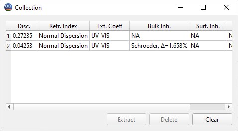

Collection
The Collection window shows a list of models acquired during the Characterization procedures. You can swap the current design in memory with any design from the Collection.

This window displays abbreviated information about previously obtained results. Only the results of the layer characterization are stored in the Collection.
To change the sort order of items in the collection, press the Sort button.
To extract one of the previous results, choose the corresponding line in the window and press the Extract button.
To delete an item stored in the collection, press the Delete button.
To clear all items in the collection, press the Clear button.